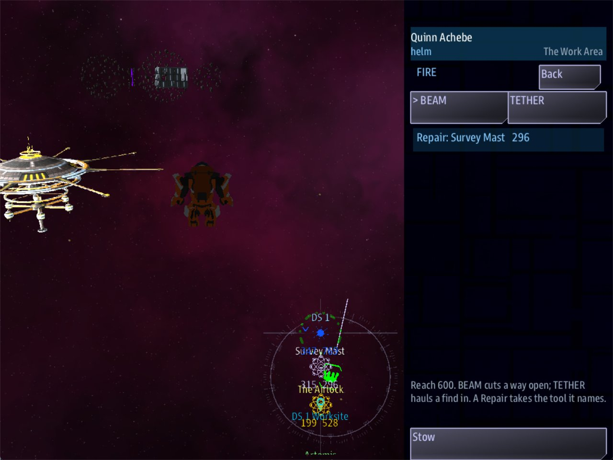

Class 4, Lecture 9 - EVA elsewhere: a repair outside a station¶
What you will have at the end¶
A job outside DS 1.
The station's survey mast is dead. With the ship near the station, a crew member suits up
and comes out of the airlock. The suit flies round the hull to the mast. The Fire app
offers Repair: Survey Mast. Twelve seconds with the beam, and the mast is mended, a
quest is finished and the side is paid.
There is no ruin in any of that. It is the same suit and the same tools, in open space beside a station.

A suit beside DS 1, its Fire app offering "Repair: Survey Mast".You will add to mission.amd. You will not touch story.mast.
The video¶
About 5 minutes. Subtitles are available in the player.
Before you start¶
MyRuinas Lecture 8 left it.mission.amdis 501 lines long, andstory.mastis Lecture 6's, 116 lines.sbs lint MyRuinsaysclean.- VS Code with the mission folder open, a command prompt open in
C:\Cosmos\data\missions, and the game closed.
Why the same mission, and not a new one. A worksite is written in the Relics section, beside The Hollow, and the game builds everything in that section. So one file can hold a ruin and a worksite. And putting them together shows you the one thing that goes wrong when a mission has two doors. Step 5 is about that.
Step 1 - A ruin with the ruin turned off¶
A crew member can go outside wherever the game has a space to fly a suit in: rooms, a way in, places to go. That is what a ruin's records are. So a worksite is written as a ruin, with everything that makes it look like a ruin switched off.
| A ruin has | A worksite |
|---|---|
| Walls, drawn as rock or plates | Walls: none |
| Loose rock drifting in the rooms | Debris: 0 |
| A cloud | No Atmosphere: line |
| Several rooms and the ways between them | One Chamber:, big enough to work in |
| Pillars to fly round | One Solid:, where the station is |
| A way in | A place with Roles: entrance: the airlock |
| Places, barriers, things to find | Repair: jobs |
One record is new: the job.
| A barrier (Lecture 8) | A repair job | |
|---|---|---|
| The line | Barrier: x, y, z, size |
Repair: x, y, z, size |
| What opens or mends it | Clear with: |
Clear with:, the same words |
| Is it in the way? | Yes. That is what it is for | Never. A suit flies straight past it |
| On the suit's Nav list | No. You gave it a place to stand beside | Yes. The job is its own place |
| The Fire app calls it | Its name | Repair: and its name |
| The word the game sends | Its key, then _opened |
Its key, then _repaired |
Step 2 - The worksite¶
In the template, DS 1 stands at 0, 0, 0. The worksite goes in the same spot.
Find The Fallen Slab, the last record of your Relics section. Leave one blank line below its description, and type four records:
### [DS 1 Worksite](yard)
---
Loc: 0, 0, 0
Walls: none
Debris: 0
---
The space around DS 1 where a suit can work. Not a ruin: no walls, no rock, no cloud.
### [The Work Area](yard_area)
---
Relic: yard
Chamber: 0, 0, 0, 1500
---
Everywhere a suit may go.
### [The Station](yard_hull)
---
Relic: yard
Solid: sphere, 0, 0, 0, 500
---
DS 1 itself. A suit goes round it, never through it.
### [The Airlock](airlock)
---
Relic: yard
Point: 0, 0, -1200
Roles: entrance
---
Where a suit comes out, and where the worksite's name sits on the map.
| Record | What it does |
|---|---|
| DS 1 Worksite | The space itself. It has no Relic: line, so it is a second ruin beside The Hollow. Its key is yard |
| The Work Area | One round room, 1500 across from the middle. A suit stays inside it |
| The Station | A Solid:. It takes the middle 500 out of the room, where DS 1 is. A suit's route goes round |
| The Airlock | The way in. It is where a suit appears, where SUIT UP is measured from, and where the name is put on the map |
Solid: is the one line here you have not typed before. Lecture 1 showed you one in The
Sink. It is written Solid: sphere, and then a middle and a size, and it means: this part
of the room is not room.
All four parts are measured from the worksite's Loc:, the same as the parts of a
ruin. If your station is somewhere else, change Loc: and nothing more.
When SUIT UP is offered here¶
The rule is Lecture 8's: the ship within 3000 of the entrance. Here the entrance is The Airlock, 1200 from the middle of the station.
A ship does not always start that close. The game puts the ship somewhere near DS 1, and in the stand-in it started 2322 from the airlock in one game and 4342 in another. If the Boarding Party app offers nothing at the start, fly toward the station.
With two ruins in one mission, the offer follows the ship. Near the station it is the worksite. At the door of The Hollow it is The Hollow.
Run lint. You want clean.
Step 3 - The job¶
Leave one blank line below The Airlock's description, and type:
### [Survey Mast](mast)
---
Relic: yard
Repair: 0, 0, -560, 80
Clear with: beam
---
The station's survey antenna. It has been dead since the first survey came home.
| Line | What it means |
|---|---|
[Survey Mast] |
The name on the suit's Nav list and in the Fire app |
(mast) |
The key. The word the game sends is made from it |
Repair: 0, 0, -560, 80 |
Where the job is, and how big its marker is. Just outside the station's 500, on the airlock's side |
Clear with: beam |
The tool that does it. Leave the line out and it is the beam anyway |
The tools are Lecture 8's.
Clear with: |
The crew member | How long |
|---|---|---|
beam |
Welds it | Twelve seconds |
tether |
Hauls it into place | Twelve seconds |
check engineering 9 |
Works it by hand, on a roll of the dice | Six seconds a try |
Step 4 - A quest that waits for it¶
When a job is done, the game sends a word: the job's key, then _repaired. Yours is
mast_repaired.
Find the comment above your Scans section:
Below the last quest record above it, leave one blank line and type:
### [Raise the Mast](raise_mast)
---
Scope: shared
Starts when: at once
Objective: Go outside at DS 1 and mend the survey mast
Done when: signal mast_repaired
Reward: 40 credits
---
 Orders from DS 1, the station you started at.
The station's survey antenna is dead. Somebody has to go out and weld it.
-  Suit up while the ship is near DS 1
-  Fly the suit round the hull to the mast, and mend it with the beam
The description uses two things you have typed before: the station's lead line from Lecture 7, and a list with pictures for bullets from Lecture 8. The list says what to do, in order, for whoever reads the quest list while the crew member suits up.
It is the same shape as slab_opened and hollow_taken: a word the game sends, and a
quest that waits. Lint knows all three.
| The game sends | When |
|---|---|
The barrier's key, then _opened |
A barrier opens |
The job's key, then _repaired |
A repair job is done |
The ruin's key, then _taken |
The ruin's piece is taken |
Step 5 - Two doors, one word¶
Your mission now has two places with Roles: entrance: The Way In, at The Hollow, and The
Airlock, at DS 1. The game needs both. Each one is where its own SUIT UP is measured from.
But your story uses that word too. The first step of The Hollow Survey says:
reach does not know which entrance you meant. It finishes when a ship, or a suit, comes
within 1000 of ANY place with that role. A suit that comes out of the airlock at DS 1 is
standing on one. The step finishes there, pays 50, and sends the crew to the altar before
they have left the station.
Lint cannot see this. Both lines are correct.
The cure is a role of your own on the door you mean. Find The Way In and add a second role:
### [The Way In](way_in)
---
Relic: hollow
Point: 0, 0, -700
Roles: entrance, hollow_door
---
Where a ship arrives. The name on the map sits here.
Then change the step Find the Way In:
entrance stays on both doors, for the game. hollow_door is on one, for your story.
The rule to keep: a role the game reads for itself is not a good word for your story to
wait on. There are two of them, entrance and relic_piece.
Your finished pieces¶
At the end of the Quests section:
### [Raise the Mast](raise_mast)
---
Scope: shared
Starts when: at once
Objective: Go outside at DS 1 and mend the survey mast
Done when: signal mast_repaired
Reward: 40 credits
---
 Orders from DS 1, the station you started at.
The station's survey antenna is dead. Somebody has to go out and weld it.
-  Suit up while the ship is near DS 1
-  Fly the suit round the hull to the mast, and mend it with the beam
At the end of the Relics section:
### [DS 1 Worksite](yard)
---
Loc: 0, 0, 0
Walls: none
Debris: 0
---
The space around DS 1 where a suit can work. Not a ruin: no walls, no rock, no cloud.
### [The Work Area](yard_area)
---
Relic: yard
Chamber: 0, 0, 0, 1500
---
Everywhere a suit may go.
### [The Station](yard_hull)
---
Relic: yard
Solid: sphere, 0, 0, 0, 500
---
DS 1 itself. A suit goes round it, never through it.
### [The Airlock](airlock)
---
Relic: yard
Point: 0, 0, -1200
Roles: entrance
---
Where a suit comes out, and where the worksite's name sits on the map.
### [Survey Mast](mast)
---
Relic: yard
Repair: 0, 0, -560, 80
Clear with: beam
---
The station's survey antenna. It has been dead since the first survey came home.
And two lines changed: Roles: entrance, hollow_door on The Way In, and
Done when: reach hollow_door 1000 on Find the Way In.
The whole file is in example\mission.amd. It is 554 lines long.
Step 6 - Check it¶
You want clean under mission.amd.
Lint names every mistake in the first two tables. The word in the last column is at the end of the line lint prints.
The worksite and the job:
| Mistake | What the game does | Lint says |
|---|---|---|
The work area is smaller than the station: Chamber: 0, 0, 0, 400 |
The suit appears inside the station, 380 from its middle | relic-unreachable-node |
Repair: 0, 0, -560 (no size) |
There is no job. The suit's list is empty, and Raise the Mast never finishes | relic-short-part |
#### [Survey Mast](mast) (four hashes) |
The same | relic-part-level |
Clear with: weld (a word of your own) |
The Fire app lists the job and says (wrong tool) whichever tool is in hand. It cannot be done |
relic-unknown-clear |
The word:
| Mistake | What the game does | Lint says |
|---|---|---|
Done when: signal mast_fixed |
The mast is mended, and Raise the Mast never finishes | unfired-signal |
Done when: signal survey_mast_repaired (the name, not the key) |
The same | unfired-signal |
Done when: signal yard_repaired (the worksite's key) |
The same | unfired-signal |
Barrier: typed where Repair: was meant |
The mast is not on the suit's list, and nothing sends mast_repaired |
unfired-signal |
What lint cannot see¶
Lint says clean for everything in this table. The first row is the one this lecture is
about.
| You wrote | What happens | What tells you |
|---|---|---|
Both doors wear entrance, and a step says reach entrance 1000 |
Find the Way In completes at DS 1 and pays 50: when the ship comes within 1000 of the airlock, or when a suit comes out of it | Nothing |
No Walls: none line |
The worksite gets a ruin's walls: 650 rocks in a shell round the station | The view |
No Debris: 0 line |
60 loose rocks drift round the station | The view |
An Atmosphere: line on the worksite |
A cloud round the station | The view |
Clear with: check engineering 30 (a number no roll can reach) |
Every try fails. The Act app reads rolled 6: 6 vs 30, failure. and the job can never be done |
The roll |
| Nothing wrong: the ship is 3300 from the airlock | SUIT UP is not offered | The Boarding Party app |
Five things that look like mistakes and are not:
- No
Clear with:line on a job. The beam does it. - No airlock at all. The offer is measured from the worksite's
Loc:, the middle of the station, and the suit appears just outside the hull. An airlock is better: you choose the side. - A job a little way inside the station's
Solid:. The suit stops outside the hull and still reaches it. - A
Repair:job in a ruin, withRelic: hollow. It works the same there: a place on the list, a row in the Fire app, a word when it is done. - A job's marker shot away by a ship. Nothing is mended. The job is still on the suit's list, and can still be done.
Step 7 - Play it¶
- Open the quest list. Raise the Mast is there, beside The Hollow Survey.
- Open the handheld, and the Boarding Party app. If the ship is within 3000 of the airlock, it names DS 1 Worksite and its button reads SUIT UP. If not, fly toward the station until it does.
- Press SUIT UP. The crew member is in a suit at The Airlock.
- Open Nav. The list has one row: Survey Mast, 533 away. Pick it. The suit flies there, and stops a little way off the hull.
- Open Fire. The row reads
Repair: Survey Mastand how far it is. BEAM is the tool in hand. Select the row, and press it again. A banner counts down:REPAIR - Survey Mast, 12s. - Twelve seconds later the job is off the list. Raise the Mast completes, and the side is paid 40.
- Come aboard.
What the Fire app says, word for word:
| When | It reads |
|---|---|
| A job is in reach | Repair: Survey Mast 260 |
| The tool in hand is not the job's | Repair: Survey Mast 259 (wrong tool) |
| The job is being done | REPAIR - Survey Mast, 12s |
| Under the list, when a job is in reach | A Repair takes the tool it names. |
The number is how far away the job is, and yours will differ.
When you stop, open mast.runtime.log in your mission folder. It should be empty.
How this page was checked, and what nobody has done. No person has done a repair at a console. The game was played by a script, with no screen: a stand-in console, the game's own SUIT UP button, the suit's own list and autopilot from the airlock to the mast, and the Fire app's own tool. The words in the table above are the ones the Fire app was asked to draw. Whether the suit's beam is seen to fire at the mast, and what the plain marker of a job looks like, nobody knows yet. If your screen differs, the screen is right.
If something goes wrong¶
| What you see | Likely cause |
|---|---|
| The Boarding Party app offers nothing at the station | The ship is more than 3000 from The Airlock. Fly toward DS 1 |
| The app names The Hollow, not the worksite | The ship is at The Hollow. The offer follows the ship |
| A console closes, or stops, when somebody suits up | The exosuit fault. Lecture 8, "If something goes wrong", has the one line that works round it |
| There are rocks round the station | Walls: none or Debris: 0 is missing from DS 1 Worksite |
| There is a cloud round the station | DS 1 Worksite has an Atmosphere: line. Delete it |
| The suit appears inside the station | The Chamber: is smaller than the Solid:. Lint names it |
| The mast is not on the suit's list | The record says Barrier:, or it has four hashes. Lint names both |
The mast's row says (wrong tool) |
The tool in hand is not the one after Clear with:. If no tool works, the word is not one the game knows, and lint names it |
| The mast is mended and Raise the Mast does not finish | The word after Done when: signal is not the job's key and then _repaired. Lint names it |
| Find the Way In completes at the station | Step 5 is not done: the step still says reach entrance 1000 |
| A try by hand keeps failing | It is a roll: a ten-sided die plus the crew member's skill, against the number you wrote. Lower the number, or send somebody with the skill |
Exercise¶
- Two more jobs. Below Survey Mast, add:
### [Coolant Valve](valve)
---
Relic: yard
Repair: 560, 0, 0, 80
Clear with: check engineering 9
---
Seized half open, on the far side of the station from the airlock.
### [Loose Panel](panel)
---
Relic: yard
Repair: 0, 0, 560, 80
Clear with: tether
---
Hanging by one bolt. It wants hauling back into place.
Play. Nav lists three jobs. The valve is round the side of the hull and the panel is behind it, and the suit flies round to each.
At the valve the Fire app has a third tool, WORK, and with BEAM in hand the row
says (wrong tool). Take WORK and press the row twice. Six seconds, and a roll is
written in the Act app, like this one from the stand-in:
The name is the crew member's. The number after engineering is their skill, from
Class 3, Lecture 4. A crew member with none needs to roll a 9 or a 10. After a miss, the
same person waits twenty seconds before the next try, and then it is success. or
failure. again.
-
A quest for all three. Write a second quest that waits for the panel:
Done when: signal panel_repaired. Then try one that waits for the valve. -
Shoot a job. A job's marker is a real thing, and a ship's beams can destroy it. That mends nothing. The job stays on the suit's list and can still be done. It is the opposite of a barrier, which a ship can shoot open. You do not have to test this: it is in the list at the end of Step 6.
-
Break it where lint can see. Change
Done when: signal mast_repairedtoDone when: signal mast_fixed. Run lint and read the warning. Put it back. -
Break it where lint cannot see. Change Find the Way In back to
Done when: reach entrance 1000. Run lint:clean. Play, and suit up at the station. Find the Way In completes at the airlock. Puthollow_doorback.
Checkpoint¶
You are done when all five are true:
sbs lint MyRuinshowsmission.amdasclean.- Near DS 1, the Boarding Party app offers SUIT UP for DS 1 Worksite.
- The Fire app offers
Repair: Survey Mast, and the beam finishes it. - Raise the Mast completes, and no line of yours sent the word.
- Going outside at the station does NOT complete Find the Way In.
Next¶
Lecture 10: the capstone. Everything in this class in one episode, with the mast as its first step, and a way to check it from the first line to the last.
Further reading¶
- "Relic interiors" in the library documentation: "A job to do", for
Repair:and the worksite, and "Going inside", for how the offer follows the ship. maps\test_station_worksite.amdin the Legendary Missions test range, if you have it: a worksite with three jobs, each with a different tool.
Download this lecture's finished files (a zip of its example folder).